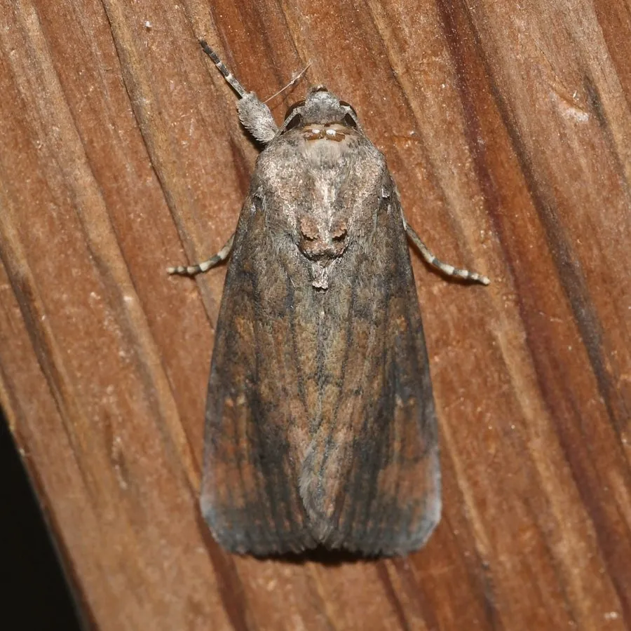

昆虫 · 动物界
草地贪夜蛾 Spodoptera frugiperda

原产美洲的暴食性害虫，2019 年入侵中国，幼虫取食玉米等禾本科作物，迁飞能力强，危害严重。
- 分类
- 门节肢动物门纲昆虫纲目鳞翅目科夜蛾科属灰翅夜蛾属
- 栖息环境
- 玉米田、稻田与甘蔗地等禾本科作物田
- 地理分布
- 原产美洲，现已扩散至非洲、亚洲和大洋洲多地
- 保护级别
- 暂无评估；被列为入侵农业害虫
物种志
草地贪夜蛾成虫翅展约 3.2–4 cm，前翅褐色带浅色斑纹，雄蛾翅面有明显的白色斜斑；幼虫体色多变，从浅绿到褐色，头部有倒 Y 形浅纹，腹部末节背面有 4 个黑斑排列成正方形，这是它最典型的识别特征。
幼虫食量大，取食玉米、水稻、甘蔗等禾本科作物，低龄时群集啃食叶肉，高龄后蛀入心叶和穗部，严重时整株被吃光。成虫迁飞能力强，可在夜间借气流飞行数百千米。它原产美洲热带和亚热带，2016 年传入非洲，2018 年进入亚洲，2019 年首次在中国云南发现，随后迅速扩散到多省，被列为中国重点管理的入侵物种和农业害虫。防治依靠监测预警、性诱剂、生物农药和科学用药。
形态与习性
- 食性幼虫取食玉米、水稻、甘蔗等禾本科作物
- 翅展成虫约 3.2–4 cm
- 识别幼虫头部有倒 Y 纹，末节有 4 个黑斑排成正方形
- 迁飞成虫夜间借气流迁飞，可飞行数百千米
- 入侵2019 年首次在中国云南发现，随后扩散多省
- 防治监测预警、性诱剂、生物农药和科学用药
趣味知识
- 草地贪夜蛾的幼虫食量惊人，严重时能把整片玉米吃光。
- 成虫一夜可借气流迁飞数百千米，扩散速度极快。
- 2019 年它首次入侵中国，随后被列入重点管理的外来入侵物种。